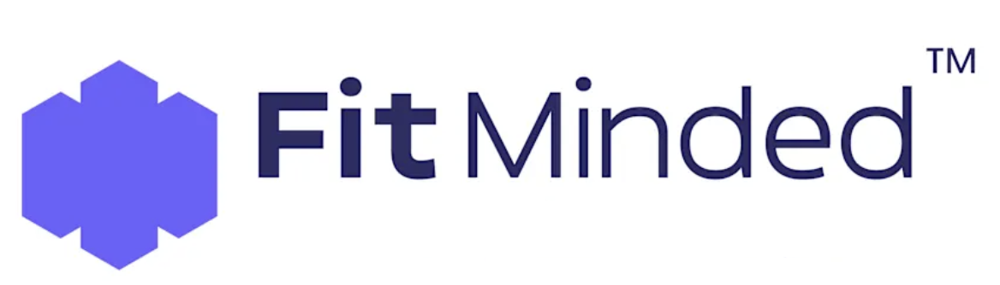

What's Missing
Most boards bring strong financial oversight and legal caution. Fewer bring a senior marketing operator who has personally built companies, led teams of 200, managed multi-million dollar budgets, and made the calls that determine whether a consumer brand scales or stalls.
That gap has a real cost — in strategy, in acquisitions, in the questions that should be getting asked and aren't.
Darren brings something rare to a board seat: the perspective of someone who has been the founder, the executive, the operator, and the advisor. He's not there to present. He's there to sharpen the thinking in the room.
25+
Years building, scaling, and operating consumer brands across beauty, wellness, lifestyle, and DTC
$750M+
Revenue generated across engagements
200+
Teams led at peak organizational scale
Industries
Beauty · Wellness · Lifestyle · DTC · eCommerce · CPG · Hospitality
What's on the Table
The difference between someone who advises on growth and someone who has personally delivered it.
Revenue growth strategy, DTC and wholesale model fluency, budget prioritization, margin management, and forecasting accountability. The ability to sit in a financial conversation and push back with authority — not just perspective.
Deep understanding of consumer behavior, brand positioning, and the full digital and experiential channel mix — paid, organic, influencer, affiliate, CRM, and beyond. Knows what drives loyalty and LTV, not just acquisition.
Founded, scaled, and operated multiple companies. Led from startup to 200 FTEs. Built and exited. Raised capital. Navigated pivots. Not theoretical — personal. There is a real difference between someone who has advised on growth and someone who has delivered it.
Advisory & Board Experience
Current advisory relationships that reflect the type of brands and leaders Darren chooses to work alongside.
A collectible, purpose-driven consumer brand with a loyal community built around original art and positive messaging.
zox.co →Colangelo College of Business — advising on business education, conscious capitalism, and student-centered growth strategy.
gcu.edu →
2025–PresentA science-led research firm that bridges clinical data and business strategy to build credibility and revenue for wellness brands.
fit-minded.com →Fit Matters
Darren is selective about where he invests his time and attention. The engagements that work best share four qualities.
Due Diligence
A brand's marketing performance is one of the most misread signals in any deal. Vanity metrics obscure real channel health. Growth numbers hide retention problems. Agency-dependent results don't survive transition.
Darren provides a structured, senior-led marketing audit for brands in acquisition or sale — delivering a clear picture of where value is real, where it's projected, and where the risk lives.
Inquire About Due Diligence →Audit Covers
How It Works
Senior-led review — no junior team, no delegation
Full channel and team audit, including digital footprint and customer journey
Clear deliverable: where value is real, where it's projected, and where risk lives
Start the Conversation
If the brand, the leadership team, and the scope of the work are the right fit — the conversation is worth having. If they aren't, Darren will say so directly.
Send a brief note about your company, the role you're exploring, and what you're hoping to accomplish. A direct response comes within one business day.